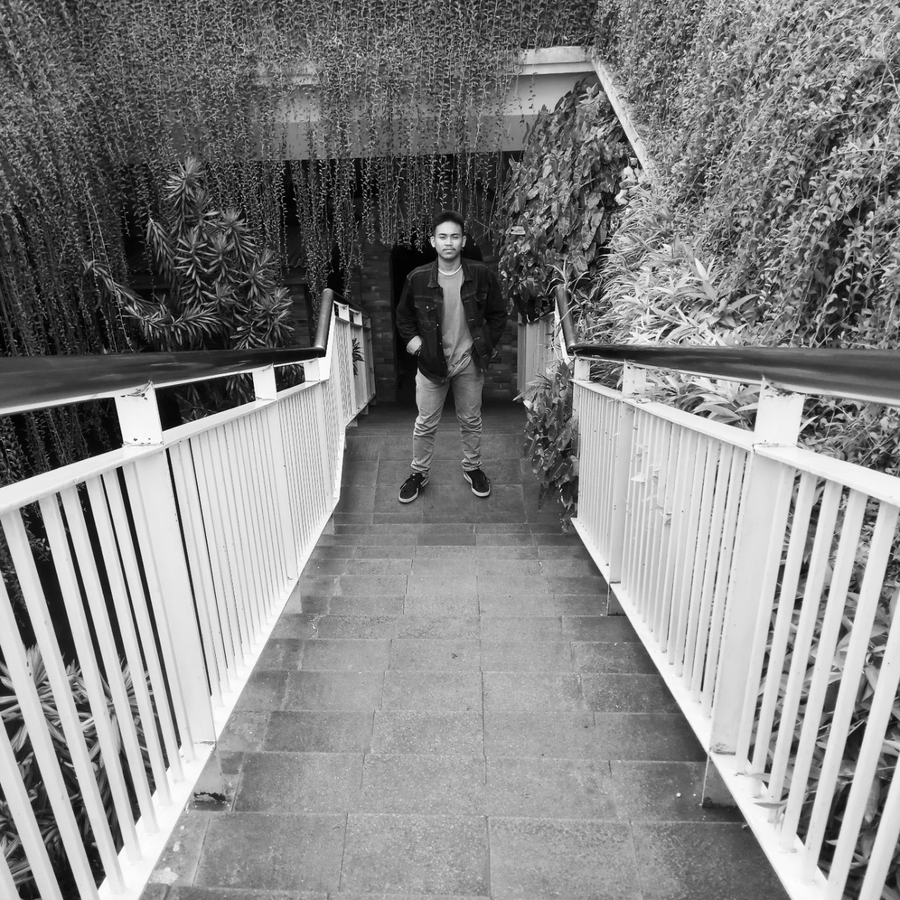
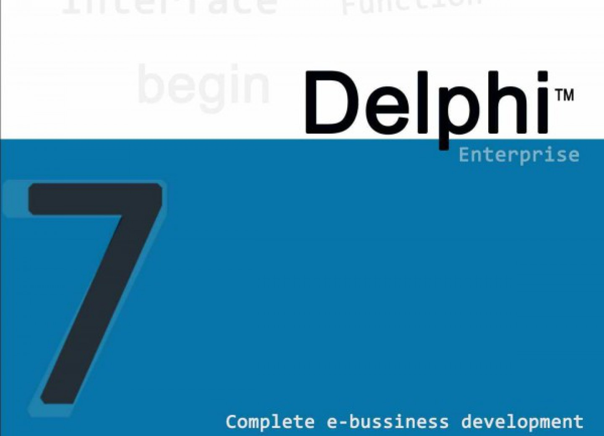
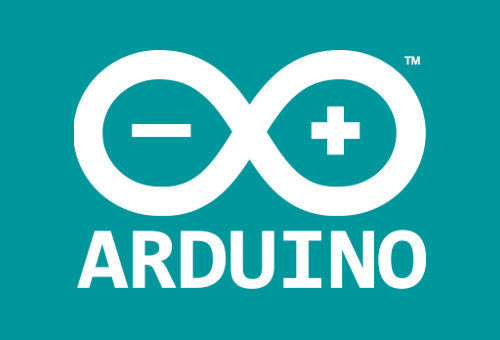

Muhammad Aldin Permana
Nama saya Aldin saya Mahasiswa prodi INFORMATIKA di Institut Teknologi Nasional, Saya sedang menjalani perkuliahan menuju semester 7, Saya selalu bertanggung jawab atas apa yang saya kerjakan, dan saya menyukai hal baru untuk dipelajari, kekurangan saya di dunia kerja tidak bisa berbahasa asing selain bahasa Indonesia dan Bahasa Inggris.
PENDIDIKAN KETERAMPILAN Ringkasan
Sekolah Dasar (SDN Merdeka5/3 Bandung) HTML 75% Salah satu keinginan saya mengikuti perkuliahan Prodi INFORMATIKA 2005 - 2011 CSS 75% Adalah menjadi Web Developer saya ingin ilmu yang saya miliki Sekolah Menengah Pertama (SMPN 28 Jakarta Pusat) JAVASCRIPT 40% dan yang akan saya dapatkan dari setiap pengalaman saya 2011-2015 PASCAL 70% akan menjadi sebuah prestasi di masa depan. Sekolah Menengah Kejuruan (SMK Daarul Uluum Jakarta Selatan) Delphi7 70% 2016-2018 PYTHON 55% Perguruan Tinggi (Institut Teknologi Nasional) 2018 - Sekarang
Aplikasi
Delphi7 Arduino Uno VisualStudioCode HTML 


Biodata
Nama : Muhammad Aldin Permana Tempat & Tanggal Lahir : Bandung, 18-07-1999 Umur : 22 Jenis Kelamin : Pria Agama : Islam Email : aldinmuhammad9@gmail.com / aldinmuhammad9@mhs.itenas.ac.id No Telp : 0877-2526-1199
Visit Me :